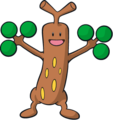
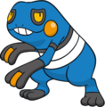
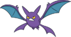
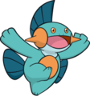
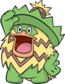
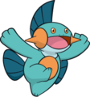
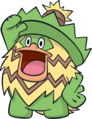
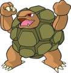
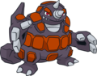

Nome: Brock/Flint/Forrest
Insígnia: Rocha
Cidade: Pewter
Biografia:
Há alguns anos, o ginásio de Pewter foi abandonado. O ex-famoso treinador Flint sentia-se deprimido por atrair poucos alunos e decidiu tornar-se um Mestre Pokémon, obrigando deu filho Brock a tomar conta do ginásio de Pewter.
Brock reergueu o ginásio, cuidou de seus nove irmãos e jamais deixou seus estudos e treinamentos de lado. Essas façanhas o tornaram bastante conhecido entre os líderes. Ainda assim, seu desejo maior era tornar-se um grande criador Pokémon. Quando Flint voltou ao ginásio, Brock partiu com Ash. Depois de um tempo, Lola, a mãe de Brock, voltou querendo tranformar o ginásio do tipo água. O ginásio manteve-se de pedra e o cargo de líder foi passado para Forrest, o irmão caçula mais velho que Brock tem. Brock deixou alguns pokémons com Forrest para que ele os use em batalhas. Chegou a evoluir o Onix e treinar muito bem Geodude. Atualmente Brock está morando em seu ginásio, mas não atua como líder.
Pokémon de Brock:



 



Pokémon de Flint:

Pokémon de Forrest:
